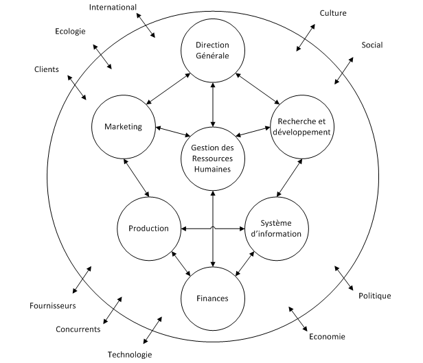

Améliorations des Processus
par les Logiciels Libres
Créé par Sigmeus / @fxthoorens
Anatomie d'une Organisation
http://www.daskoo.org/
Qui est le responsable de tout organiser ?
La Direction Générale ?
La Production ?
Resources Humaines ?
Dans les faits : Système d'Information
Pourquoi c'est le meilleur choix ?
En contact avec (tous) les processus d'entreprises
En contact transverse avec (tous) les employés
Petite Entreprise
L'informaticien interne ou externe a une vue générale
Confidences des employés
Besoin informatique
Le traiter comme un symptôme
Le transformer en besoin organisationel
Exemple
Département Commercial
Besoin d'un CRM

Se poser les questions
Les ventes baissent ?
Beaucoup de tournover ?
Déresponsabilisation ?
Besoin organisationel
Améliorations des conditions de travail
Responsabilisation
Solution
Puis-je le faire sans informatique ?
Sûr ?
Consulter un professionnel...
Mais !?
Résumons
- Le logiciel libre ou gratuit mais il faut payer l'integration et/ou la maintenance- L'entreprise a besoin d'un professionnel pour aider à s'organiser
Méthode Classique
Méthode Classique
Cahier des Charges
500 pages de documentation plus ou moins claires sur les processus et les besoins informatique et une description détaillée de l'outil informatique envisagé.
Appel d'offre :
- Integration d'une solution existante
- Création d'une solution adhoc
Avantages
- Budget facile à gérer
Inconvénients
- La solution ne répond jamais au problème : il faut donc s'adapter à la solution
- Risque de non adoption
- Tension entre les différents niveaux de hiérarchie
- Tension avec le fournisseur de solution à la recette
- Déresponsabilisation
- Surcoût pour adapter la solution

Méthode Agile
Un peu d'histoire
Etats-Unis, Février 2001
17 experts en informatique se réunissent et publient
l'Agile Manifesto
pour définir de manière canonique une méthodologie de développement
4 valeurs
- Les individus et leurs interactions plus que les processus et les outils.
- Du logiciel qui fonctionne plus qu’une documentation exhaustive.
- La collaboration avec les clients plus que la négociation contractuelle.
- L’adaptation au changement plus que le suivi d’un plan.
12 Principes
Résumé
- Beaucoup de bon sens (simplicité, collaboration, confiance...)
- Livrer fréquement
- S'adapter aux changements
- Favoriser l'auto-organisation
Méthodologie Sigmeus
Inconvénient des méthodes Agile
Invasif chez le client
Centralisé sur l'outil informatique
Inspirée de Kanban et Scrum
Moins invasif chez le client que Scrum
Objectif : amélioration de l'organisation
Gérer le changement
Pouvoir dire que l'informatique n'est d'aucune utilité
Chronologie T0
(Documentation des processus existants et des goulots d'étranglement)
Cahier des charges "light"
Désignation d'utilisateurs type pour les tests
T0 + 4 semaines
Première version pour test
Définition des prochaines priorités
T0 + 6 semaines
Deuxième version pour test
Définition des prochaines priorités
T0+8
Mise en place générale
Chronologie T0+10
Chronologie T0+12
Complexité Organisationelle
Exemple
Gestion Commerciale CRM
Gestion Commerciale CRM
Outlook trop lourd et pas adapté
Solution du commerce (Swiss Made!) chère et compliquée
Perte de clients, oubli de rendez-vous
Aucune possibilité d'évaluer l'efficacité commerciale
Equipe 100% délocalisée
Pas d'informaticien
Centré sur le calendrier avec rendez-vous, devis, rapports, CA etc...
T0 + 1
Un calendrier accessible en ligne
Prise de rendez-vous, synchronisation outlook
Utilisable de suite
0 bouton
T0 + 2
Création d'affaires avec plusieurs rendez-vous
Différents comptes clients (importé de l'ancien système)
T0 + 3
Création du catalogue d'articles
Calendrier Perso (demande des commerciaux!)
T0 + 4
Création et édition de devis
Gestion documentaire par affaire (photos d'installations)
T0 + 5
Rappel de deadline des affaires
Business Analysis (export vers excel)
Caratéristiques
Pas de cahier des charges (Le T0+1, en guise de devis, gratuit...)
Composants 100% Open-Source (Mysql, Java, Grails, fullcalendar)
Pas de formation, y compris pour nouveaux arrivants
Pas (besoin) de documentation...
Code source à disposition, si changement de maintenance